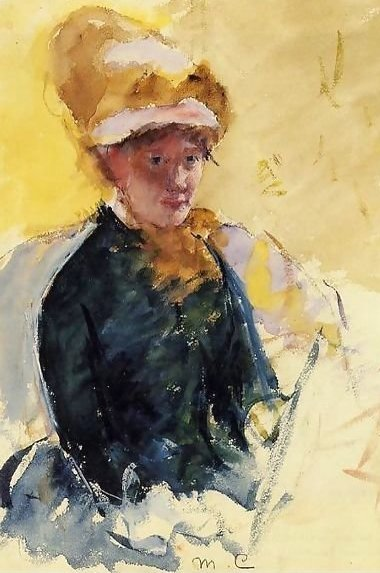

Other Artists
discover other impressionism artists
Allan Freelon

Allan Freelon, Boat at Harbor, 1928, oil on canvas
Allan Randall Freeon was a Philadelphian African-American Impressionism artist. He grew up in a middle-class family. His talent earned him a full scholarship to the Philadelphia Museum School of Industrial Art. During World War I, he served in the US army and after the war ended, he began teaching art in a Philadelphia public schools. He believed that everyone could benefit from the study of art. During his teaching years, he became more interested in the European Impressionism and Post-Impressionism. He, different from other African artists, believed that black artists should develop their own independent art career and trends.
Mary Stevenson Cassatt
Mary Cassatt, self portrait
Mary Stevenson Cassatt (1844-1926) was an American artist who lived in France. Her paintings often focus on the social and private lives of women. Her mentor was Edgar Degas who was another impressionism pioneer. Edgar invited her to join the group of Impressionists which was the only official American group associated with Impressionism at that time. Edgar gave her criticism on her works and techniques. She spent most of her late years in Grasse and died in 1926.
Berthe Morisot

Berthe Morisot, The Cage, 1885; Oil on canvas
Berthe Morisot was a French impressionism artist. She studied under the Brabizon painter Jean-Baptiste-Camille Corot and leanred about plein-air painting. Then she studied under Edouard Manet. She focused more on the "feminine" qualities of her work such as intuitiveness, spontaneity, and delicacy.